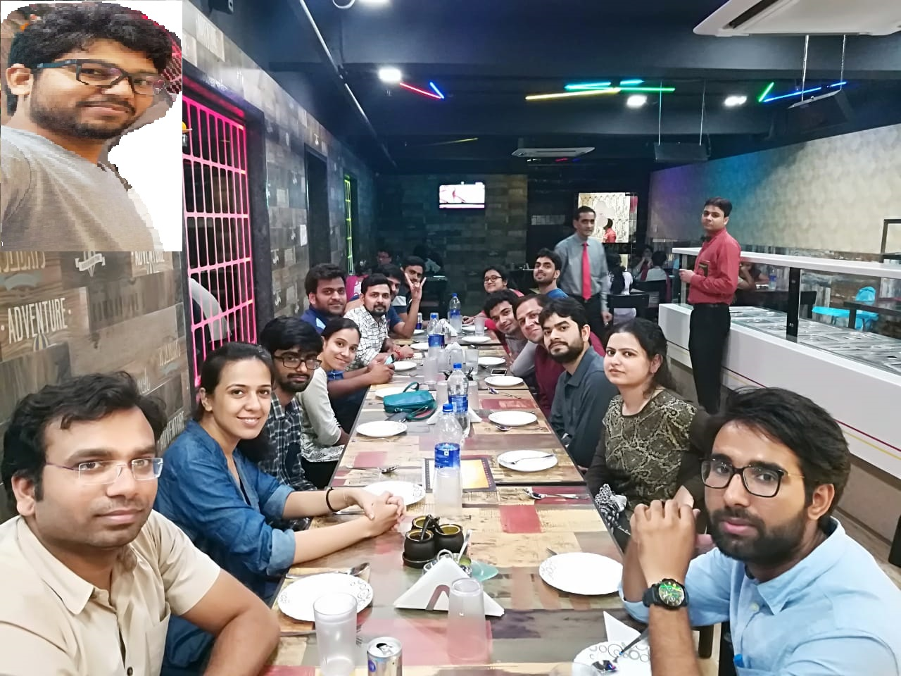
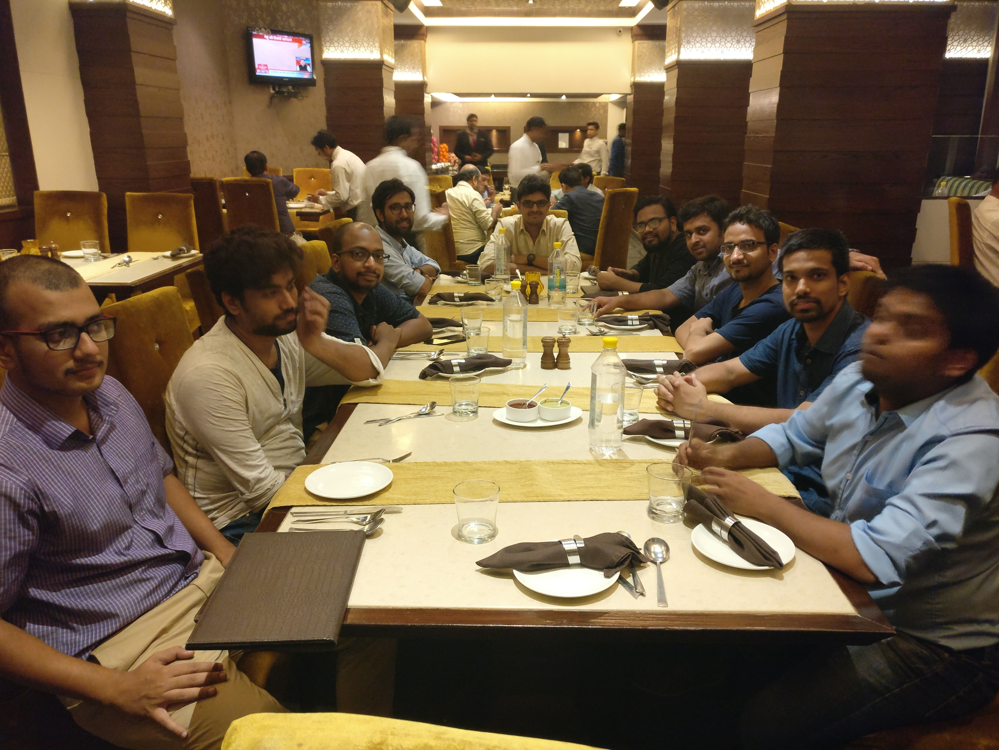
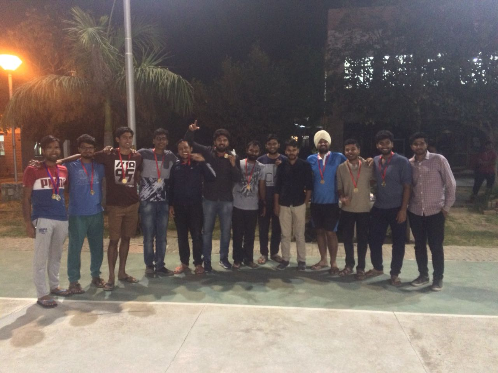

Vikram Singh – Group Photos
Labmates

Abhishek Agrahari(right most), Apoorva, Sarath, Preeti, Saurabh, Abhishek, Siddharth, Praveen, Manjeer,
\(\hspace{0.7cm}\) Ankit, Manoj, Kunwar, Suraj, Parul, me(right most) and man on camera is Ajay(left upper corner)
Wing mates

\(\hspace{0.1cm}\)Sauradeep(leftmost), Lohit, Bhargav, Me, Sai(middle), Daya, Rohit, Amit, Amol, Umesh(right most) and
\(\hspace{7.7cm}\) Koushilk is on Camera
Cricket Team-mates

\(\hspace{0.4cm}\)Me(leftmost), Sai, Brihaspati, Suryan, Kunwar(Captain), Manoj, Bapan, tournament organizer, sports
\(\hspace{3.4cm}\) secretary, Gagan(Former Captain), Vinayak, Lohit, Pawan(rightmost)